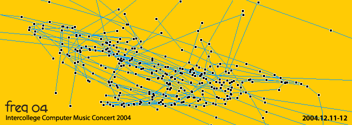

|
|
■出品作品の種類 次の３つの出品枠があります。
出品を検討される方が最も心配されているのが、福岡は遠くて交通費がかかり、演奏者を連れていけないという事ではないかと思います。そこで、福岡の優れた演奏家を4名用意しました。これらの演奏家のための作品を募集します。 演奏家への出演謝礼の内、出品者に負担して頂くのは一曲につき2万円です。残額は主催者が負担します。なお、練習等のスケジュールの関係上、演奏者同士の組み合わせは不可です。一人の演奏者とコンピュータを組み合わせて下さい。 もちろん、参加作品曲種は上記の楽器を含んだ曲種ばかりではありません。演奏者を各自の負担で連れてこられることも可能です。 ■出品方法 コンサート、インスタレーションとも、学生個人による直接の申し込みは出来ません。ICWG参加大学の担当教員をとおして申し込んで下さい。 |
■出品応募要領 ３つのコンサートで演奏できる曲目数は25曲前後（最大30、少なくても21曲を予定）です。出品希望作品がこれをこえる場合、実施担当者が採否を検討する場合があります。採否の検討基準は、おおむね以下の通りです。
ICWG参加大学の担当教員が申込書をまとめ、10月22日必着で下記までご送付下さい。 申込書様式：Word形式，PDF形式 申込書様式が見れないというご指摘をいただきました。
もし、ファイルが壊れている等のエラーが出る場合は、お手数ですが以下の画像ファイルを参照してください。 〒815-8540 楽器演奏を含む作品を出品する場合、エントリー書類提出の時点で、演奏者用の楽譜・練習用音源・演奏デモテープ等を同封して下さい。 ■出品決定後のスケジュール 11月1日（月）までに 11月12日（金）までに 12月10日（金）より |